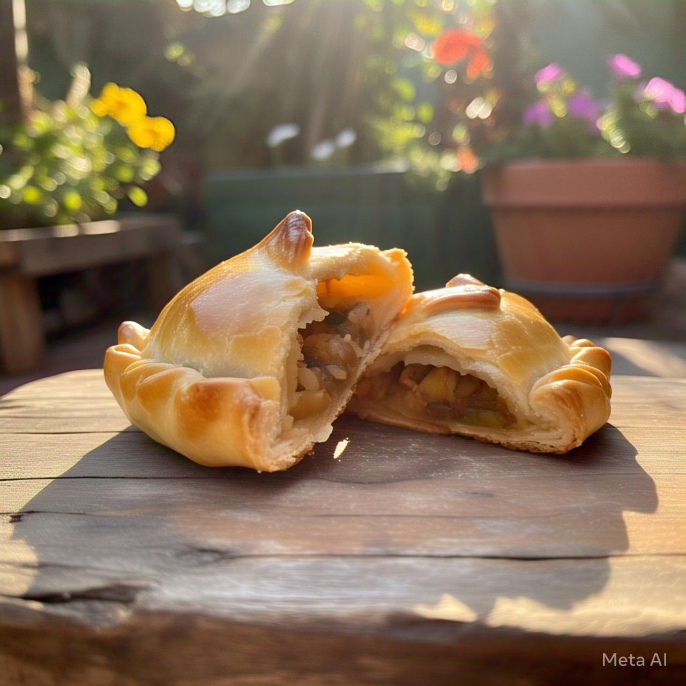

España, país de la península ibérica de Europa, incluye 17 regiones autónomas con diversas características geográficas y culturales. En Madrid, su capital, se encuentra el Palacio Real y el Museo del Prado, que alberga obras de maestros europeos. Segovia tiene un castillo medieval (el Alcázar) y un acueducto romano intacto. La capital de Cataluña, Barcelona
España
Mexico

México es un país entre los Estados Unidos y América Central, conocido por las playas en el Pacífico y el golfo de México, y su diverso paisaje de montañas, desiertos y selvas. Las ruinas antiguas, como Teotihuacán y la ciudad maya de Chichén Itzá, se distribuyen por el país, al igual que las ciudades de la época colonial española
Japón

Japón es una nación insular del océano Pacífico con densas ciudades, palacios imperiales, parques nacionales montañosos y miles de santuarios y templos. El tren bala Shinkansen conecta las islas principales de Kyushu (con las playas subtropicales de Okinawa), Honshu (con Tokio y el memorial del bombardeo atómico en Hiroshima) y Hokkaido (famosa por el esquí). Tokio, la capital, es famosa por sus rascacielos, el comercio y la cultura pop.
Argentina

Ver más información de Argentina
Argentina es un país sudamericano de gran envergadura con un terreno que incluye las montañas de los Andes, lagos glaciales y praderas en las Pampas, la tierra tradicional de pastoreo de su famoso ganado. El país es conocido por el baile y la música del tango. Su gran capital cosmopolita, Buenos Aires, se centra en la Plaza de Mayo, rodeada por imponentes edificios del siglo XIX, como la Casa Rosada, el icónico palacio presidencial
Mercados